Histoire et éducation à la citoyenneté
08 / 12 réalité sociales
L'expansion européenne dans le monde
XVe au XVIIe siècle · Les grandes explorations
- colonisation
- culture
- économie-monde
- empire
- enjeu
- esclavage
- Grandes découvertes
- technologie
Mise en contexte
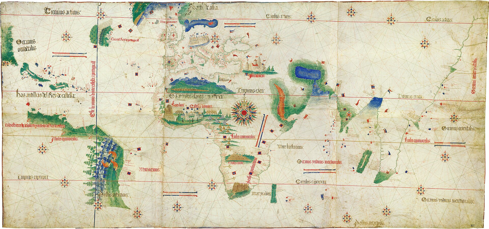
Source
anonymous Portuguese (1502), Cantino planisphere (1502), Wikimedia Commons. Licence : Domaine public.Le contexte culturel et économique de la Renaissance favorise un vaste mouvement d'exploration et de colonisation. Les réseaux d'échange qui se mettent en place entre les métropoles européennes et leurs colonies constituent une première forme d'économie-monde. Les territoires et les sociétés colonisés, en Afrique ou en Asie, sont profondément affectés par l'arrivée des Européens. L'étude de la colonisation et de ses conséquences politiques et économiques permet de saisir la portée des relations économiques à l'échelle mondiale.
Concepts à l'étude
- Colonisation : la prise de possession d'un territoire par un pays étranger, qui l'exploite et y impose son autorité.
- Culture : les croyances, les langues et les manières de vivre d'une société, bouleversées par la rencontre entre les peuples.
- Économie-monde : un vaste réseau d'échanges qui relie plusieurs continents autour d'un centre dominant.
- Empire : l'ensemble des territoires soumis à l'autorité d'un même État.
- Enjeu : ce qu'on peut gagner ou perdre dans une situation, par exemple l'accès aux épices ou aux métaux précieux.
- Esclavage : la condition d'une personne traitée comme une marchandise, privée de liberté et forcée de travailler sans salaire.
- Grandes découvertes : les expéditions maritimes européennes des 15e et 16e siècles qui font connaître de nouveaux territoires aux Européens.
- Technologie : les inventions et les techniques, comme la caravelle ou l'astrolabe, qui rendent les longs voyages possibles.
Situer dans le temps
* La plupart des historiens fixent la fin du Moyen Âge en 1492, avec l'arrivée de Christophe Colomb en Amérique. D'autres retiennent plutôt 1453, l'année de la prise de Constantinople par les Ottomans, qui met fin à l'Empire romain d'Orient. Les deux dates se défendent : elles marquent toutes deux un basculement du monde connu des Européens.
Les connaissances scientifiques évoluent
La période de la Renaissance, comme nous l'avons vu au chapitre précédent, amène une nouvelle vision de l'Homme, mais aussi de sa conception du monde et de l'Univers. De nouvelles théories ont ainsi été développées en astronomie.
En effet, depuis l'Antiquité, la théorie du géocentrisme, qui place la Terre immobile au centre de l'Univers, est communément acceptée. Cependant, Copernic, un prêtre polonais, élabore la théorie de l'héliocentrisme lors de la Renaissance. Rappelons que cette théorie place le Soleil au centre de l'Univers. Galilée appuie l'idée de Copernic grâce à sa lunette astronomique. Il affirme aussi que la Terre tourne sur elle-même tout en tournant autour du Soleil. Il sera finalement jugé devant le tribunal de l'Inquisition pour avoir soutenu les idées de Copernic sur l'héliocentrisme, et ses principaux ouvrages seront inscrits dans l'Index.
Kepler, pour sa part, ajoute que la Terre tourne autour du Soleil de manière elliptique. Finalement, Isaac Newton élabore la théorie de la gravitation universelle, ce qui explique pourquoi la Lune ne tombe pas sur la Terre lors de sa rotation autour de celle-ci.
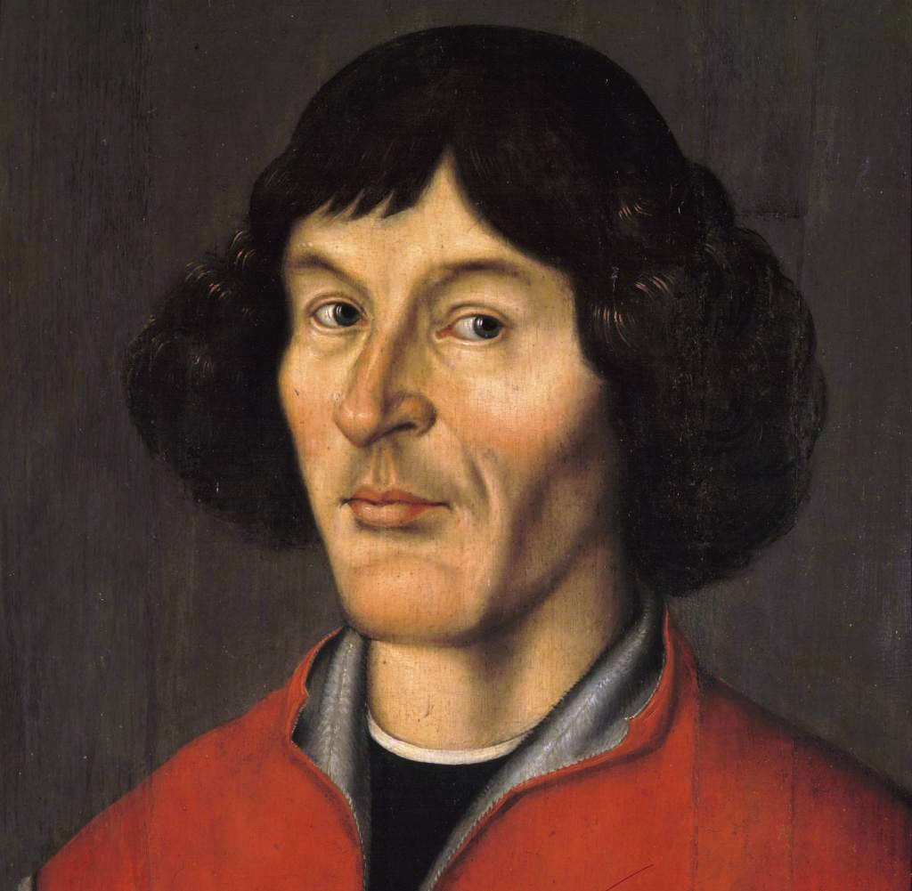
Source
Unknown author Unknown author, Nikolaus Kopernikus, Wikimedia Commons. Licence : Domaine public.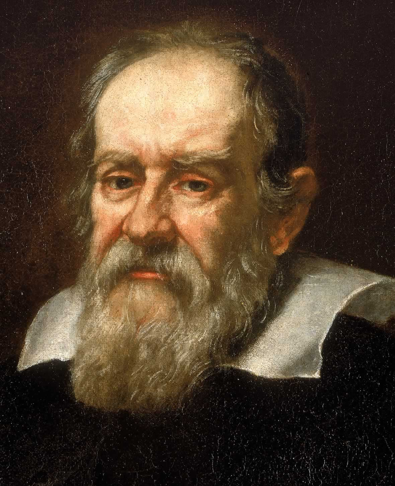
Source
Justus Sustermans, Galileo.arp.300pix, Wikimedia Commons. Licence : Domaine public.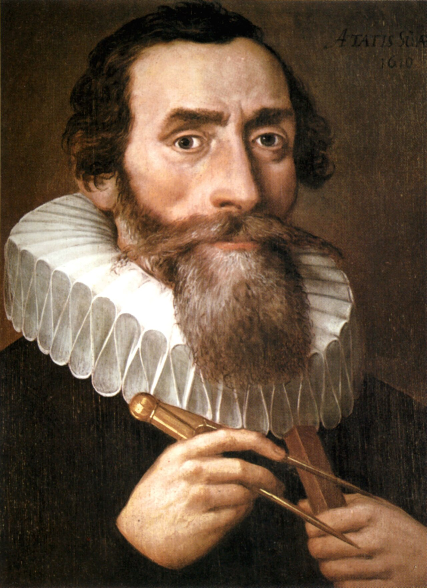
Source
August Köhler [1], JKepler, Wikimedia Commons. Licence : Domaine public.La recherche de produits de luxe
Lors de la Renaissance, les monarques européens profitent des routes commerciales, telle que la route de la soie, afin d'obtenir des produits de luxe. Parmi les produits recherchés, il y a les épices, la soie et les métaux précieux.
Les épices Le poivre, la cannelle, le clou de girofle et la muscade sont les principales épices recherchées à cette époque. On s'en servait comme moyen d'échange, pour ajouter de la saveur aux aliments, comme médicament, mais surtout comme moyen de conserver la nourriture.
La soie Les monarques européens ont développé un goût pour la soie chinoise. Ils cherchent donc à obtenir ce produit par la route de la soie, puisque la Chine est la seule à connaître son processus de fabrication. Ce tissu peut aussi servir de monnaie d'échange.
Les métaux précieux En Europe, on manque d'or et d'argent depuis le 14e siècle. Les mines européennes et africaines sont épuisées, l'augmentation de la population oblige à émettre de plus en plus de monnaie et la guerre a vidé les coffres de plusieurs familles royales. Le Livre des merveilles de Marco Polo incite aussi les monarques à mettre la main sur les richesses de l'Orient.
La prise de Constantinople en 1453
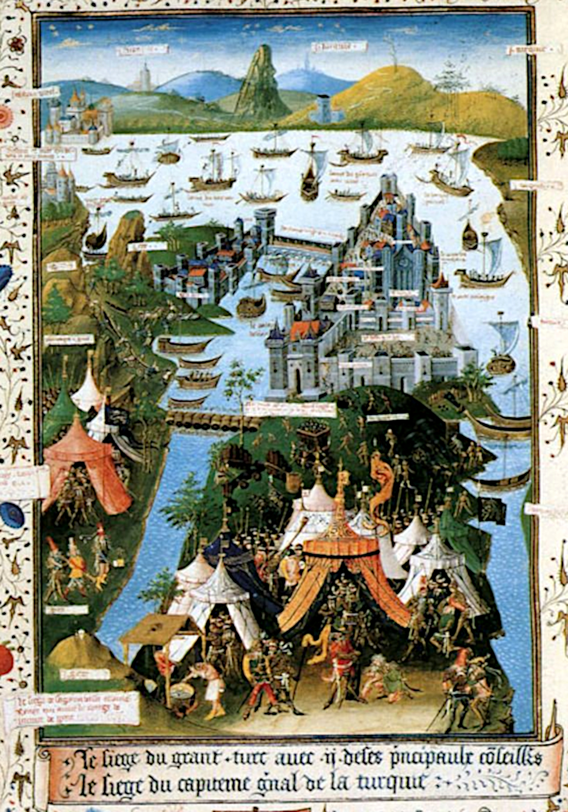
Source
Jean Le Tavernier : Miniature "The siege of Constantinople in 1453" - made in Lille in 1455, in manuscript : "Advis directif pour faire le passage d'oultre-mer", translator: Jean Miélot., Siege of Constantinople BnF MS Fr 9087, Wikimedia Commons. Licence : Domaine public.Constantinople, située stratégiquement à l'entrée de la mer Noire, possède un port par lequel passent tous les navires européens qui se rendent en Asie. La noblesse européenne prisait énormément les épices, comme le poivre, les vêtements de soie et les pierres précieuses qui transitaient par cette ville.
En 1453, les Turcs de l'Empire ottoman, sous le sultan Mehmet II, prennent possession de Constantinople. Fortement protégée grâce à ses fortifications, à la Corne d'Or et à l'utilisation du feu grégeois, la ville était réputée imprenable. Néanmoins, Mehmet II a su contourner la Corne d'Or en faisant glisser ses navires à travers la forêt, sur des billots de bois enduits d'huile d'olive. Le siège de Constantinople a donc débuté et les 8000 soldats byzantins n'ont pu stopper l'armée du sultan, forte de plusieurs dizaines de milliers d'hommes.
Une conséquence majeure pour le commerce
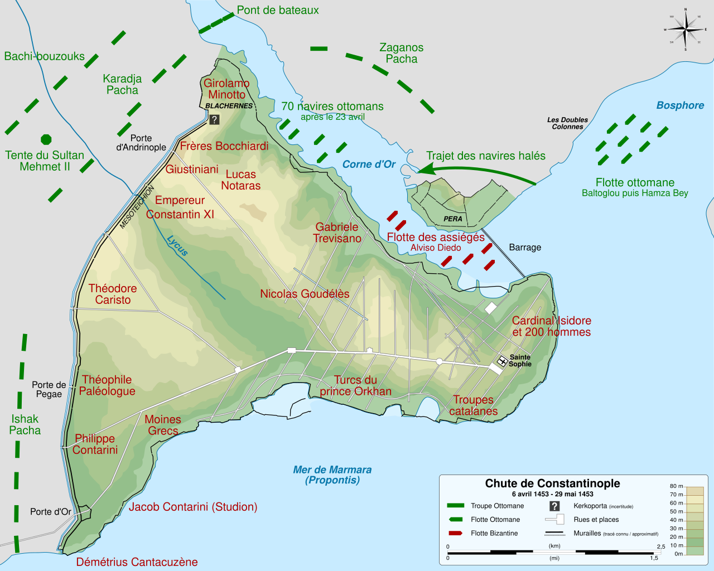
Source
Sémhur ( talk ), Siege of Constantinople 1453 map-fr, Wikimedia Commons. Licence : Creative Commons BY-SA 4.0.En prenant le contrôle de ce passage, les Turcs imposent dorénavant des taxes sur les produits importés et exportés. Elles étaient si élevées que les profits des marchands diminuaient. Ainsi, les Européens commencent à chercher une nouvelle route vers l'Asie, en passant par l'océan Atlantique ou en tentant de contourner l'Afrique. Nous pouvons donc constater que :
- le passage vers l'Asie, bien que possible, coûte cher aux marchands qui désirent importer des produits de luxe vers l'Europe;
- le désir de trouver une nouvelle route vers l'Asie apparaît.
Les innovations techniques au service des explorateurs
Sans progrès techniques, aucune de ces expéditions n'aurait été possible. Quatre innovations changent tout.
La caravelle Navire utilisé par les Portugais et les Espagnols, facile à manoeuvrer grâce au gouvernail d'étambot. C'est l'embarcation préférée des navigateurs pour l'exploration des nouveaux territoires.
L'astrolabe C'est un instrument qui donne la latitude exacte où l'on se trouve, grâce à l'angle formé par l'horizon et un corps céleste. Il donne également l'heure, le jour comme la nuit.
La boussole Une boussole est un instrument de navigation constitué d'une aiguille magnétisée qui s'aligne sur le champ magnétique de la Terre. Elle indique ainsi le nord magnétique et, par le fait même, l'est, le sud et l'ouest.
Le portulan Un portulan est une sorte de carte de navigation, utilisée du 13e au 18e siècle. Elle sert essentiellement à repérer les ports, mais aussi à connaître les dangers présents près des côtes : courants, hauts-fonds, etc.
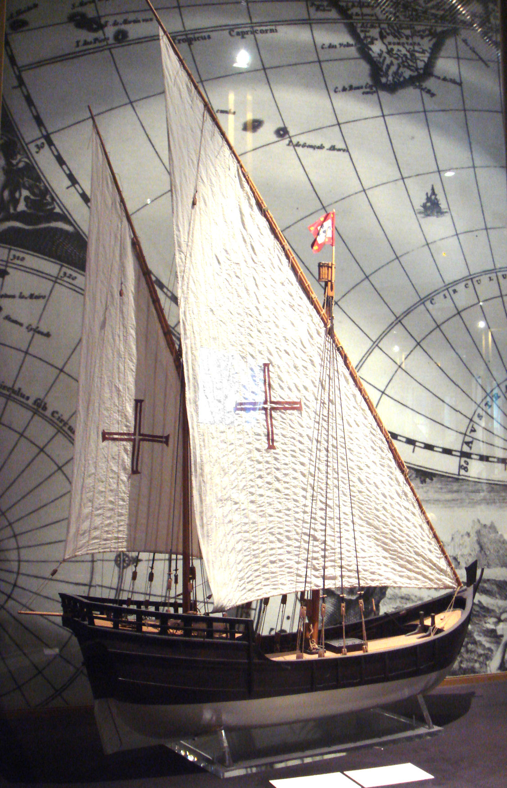
Source
PHGCOM, Portuguese Caravel, Wikimedia Commons. Licence : Creative Commons BY-SA 3.0.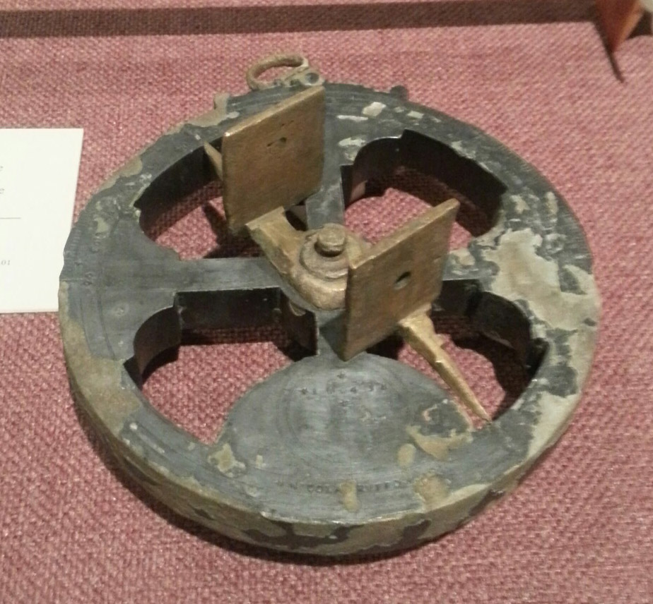
Source
Neochichiri11, Silver-plated Mariner's Astrolabe, Wikimedia Commons. Licence : Creative Commons Zero.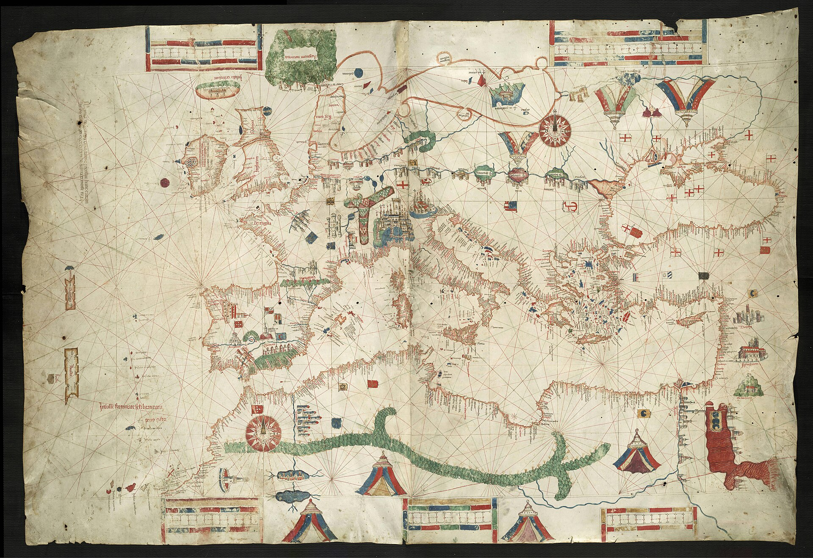
Source
Albino de Canepa, Portolan chart by Albino de Canepa 1489, Wikimedia Commons. Licence : Domaine public.Des acteurs aux motivations diverses
Les motivations qui poussent les Européens à explorer de nouvelles routes maritimes et de nouveaux territoires sont nombreuses. Ces motivations sont d'origine économique, religieuse ainsi que politique.
La motivation économique Ce sont d'abord des raisons économiques qui poussent les empires coloniaux à se lancer dans de grandes explorations. Le commerce des métaux précieux, des épices et de la soie enrichit plusieurs pays européens. Ces produits proviennent entre autres de l'Asie. Les nombreux conflits en Afrique du Nord et la prise de Constantinople par les Turcs en 1453 poussent plusieurs pays à chercher une solution afin de continuer à faire du commerce.
La motivation religieuse Les Européens ont aussi des motivations religieuses. À partir de la découverte de nouveaux territoires, ils s'aperçoivent que la religion chrétienne n'est pas répandue partout dans le monde. Les autorités religieuses se donnent alors comme mission d'évangéliser les peuples qui ne sont pas chrétiens.
La motivation politique Politiquement, les royaumes de l'époque accumulent beaucoup de pouvoir et de prestige en détenant une grande quantité de territoires autour du monde. Le désir d'expansion des grands États européens est donc bien réel et représente une motivation politique des grandes explorations.
Source : Alloprof
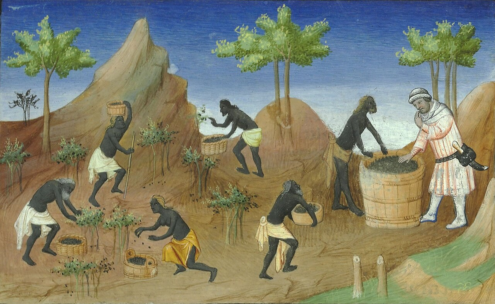
Source
Maître de Boucicaut et Maître de Mazarine, Le livre des merveilles de Marco Polo-pepper, Wikimedia Commons. Licence : Domaine public.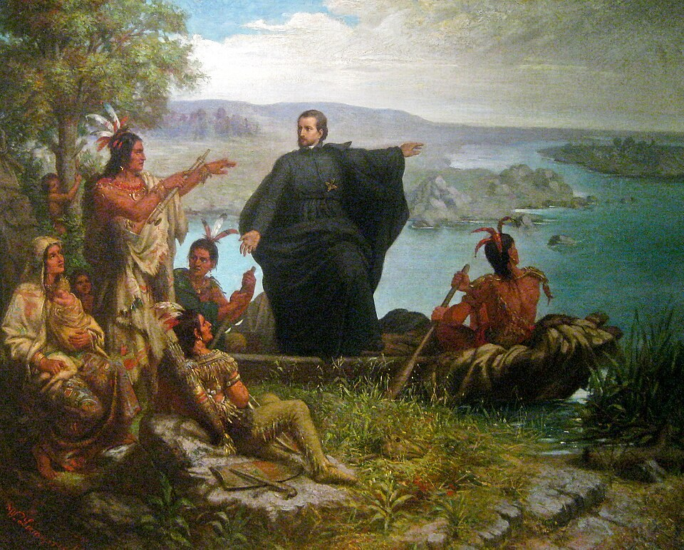
Source
Wilhelm Lamprecht, Pere Marquette, Wikimedia Commons. Licence : Domaine public.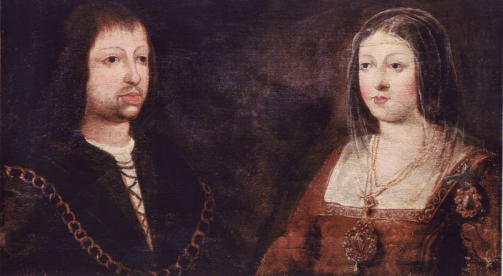
Source
anonymous, Ferdinand of Aragon, Isabella of Castile, Wikimedia Commons. Licence : Domaine public.Les explorateurs et leurs découvertes
Dès la fin des années 1400 et pendant plus d'un siècle, la connaissance de la géographie de la Terre a progressé à pas de géant. Christophe Colomb, Jean Cabot et Amerigo Vespucci ont fait entrer les Amériques dans l'histoire. Vasco de Gama a été le premier navigateur européen à atteindre l'Asie par l'océan Indien. Quant à Fernand de Magellan et Francis Drake, ils ont successivement fait le tour du globe par la mer.
Au cours de ce siècle d'exploration à travers le monde, des peuples différents se sont rencontrés pour la première fois. Certaines alliances ont vu le jour, le commerce s'est développé, des conflits ont éclaté et l'esclavage est apparu. Ces rencontres ont posé les jalons de notre monde moderne et globalement interdépendant.
Les explorateurs des Grandes découvertes
Choisis un visage, puis relève le défi
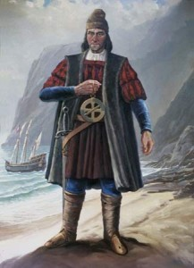
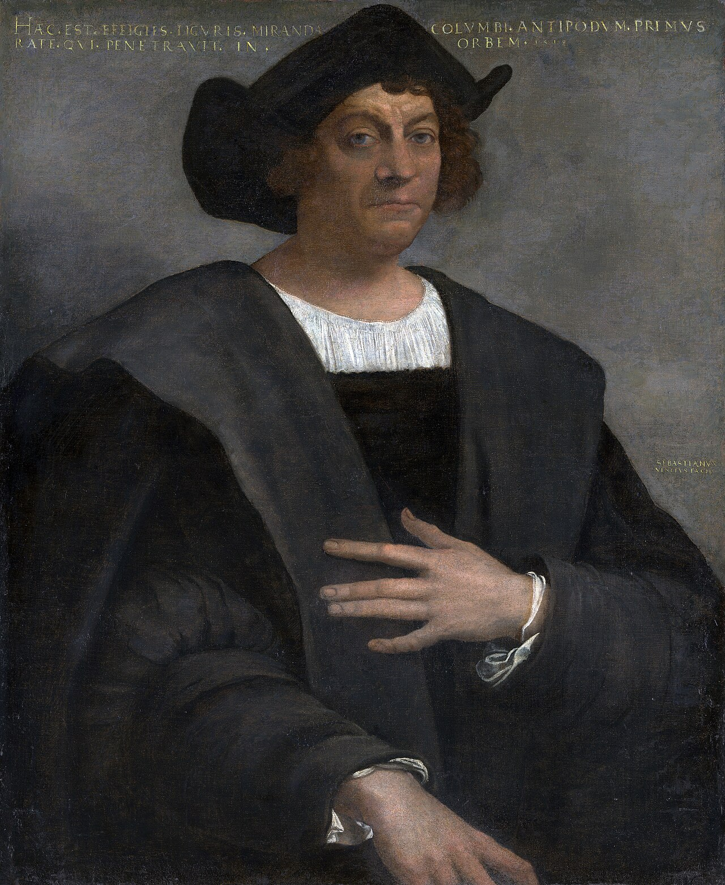
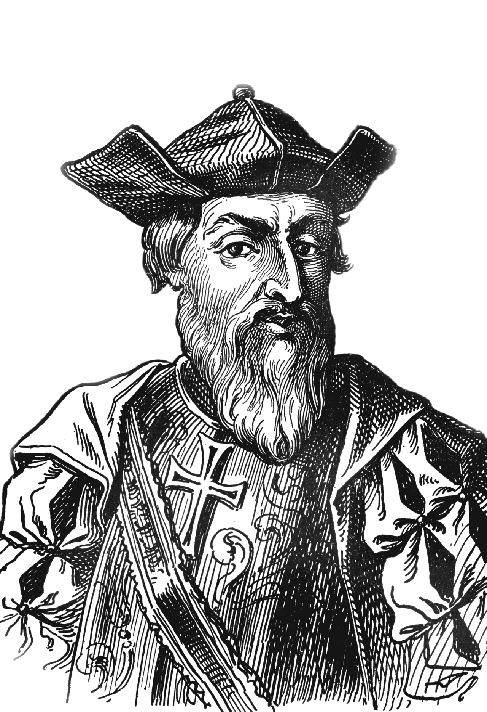
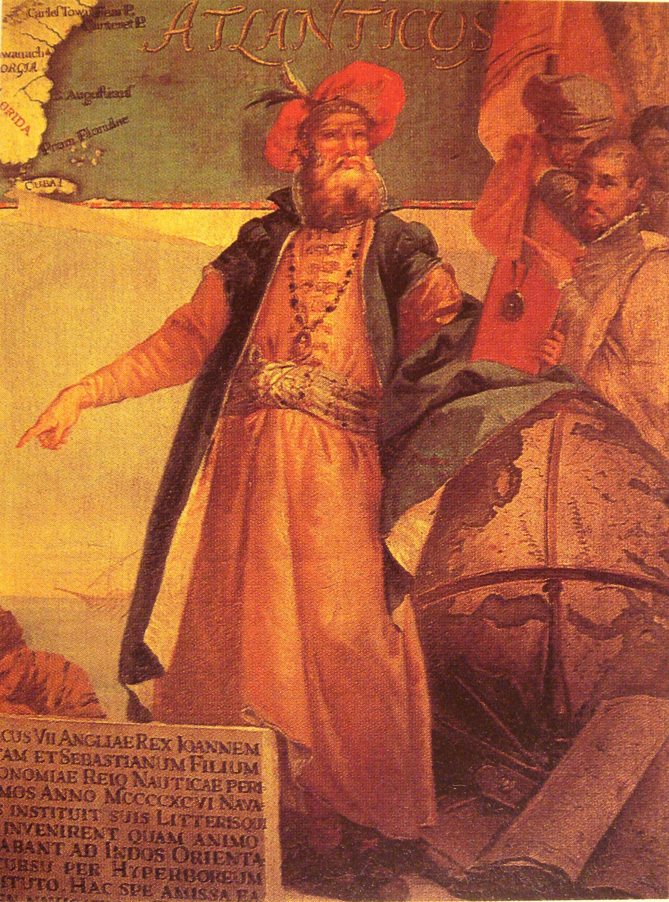
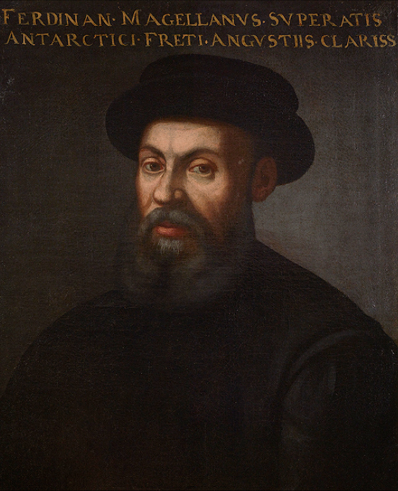
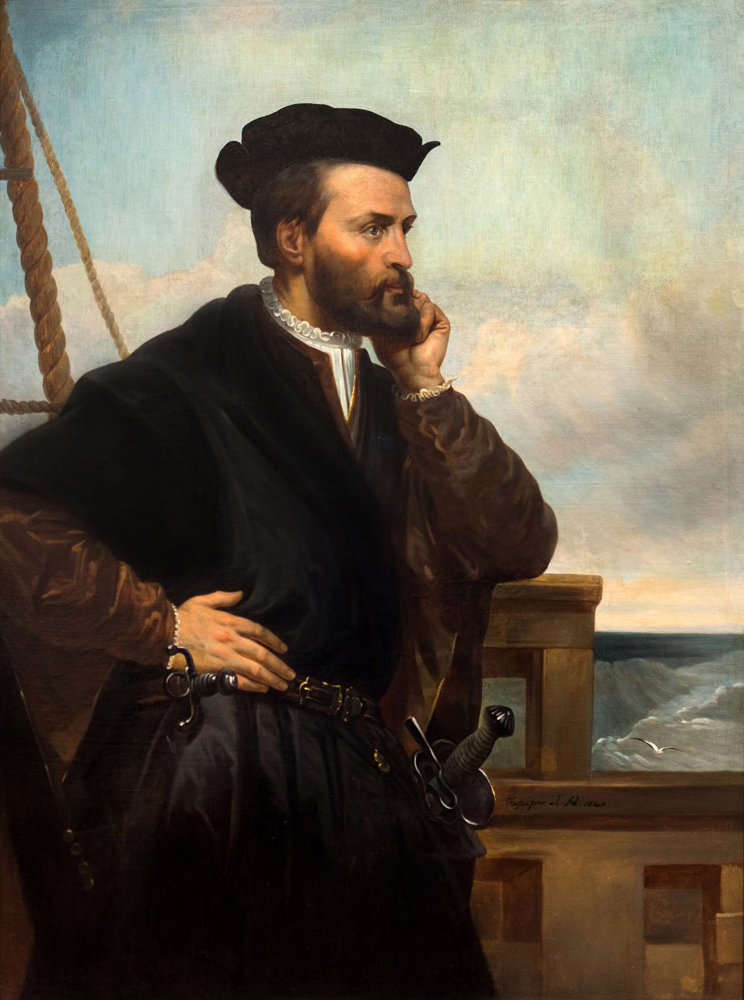
Défi : qui suis-je?
Les conséquences des Grandes explorations
Le traité de Tordesillas de 1494
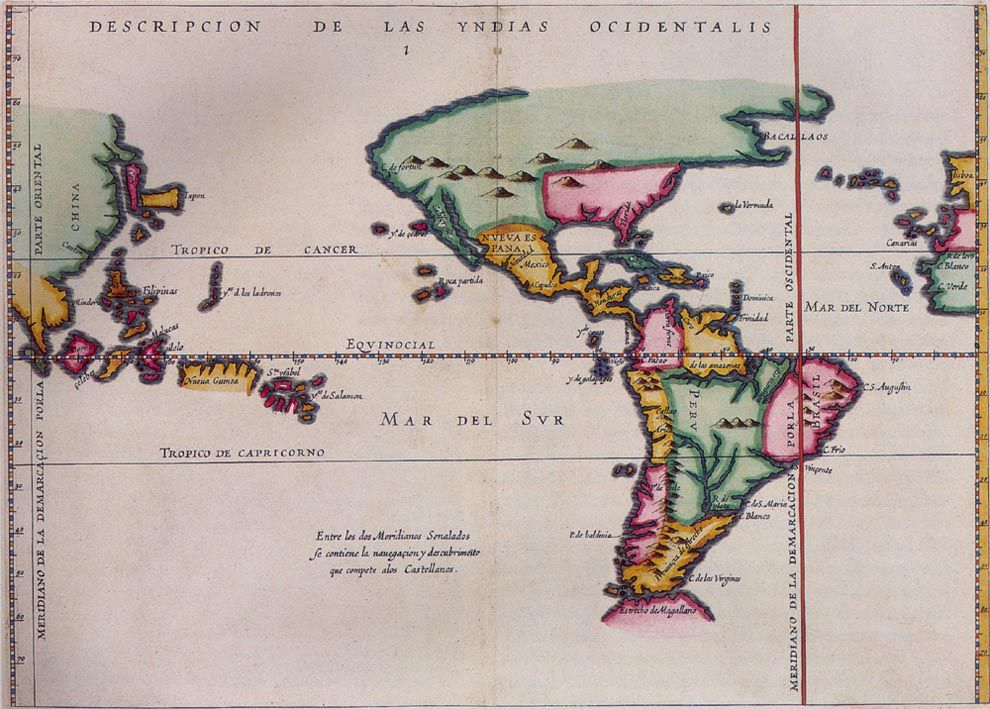
Source
Map by Antonio de Herrera y Tordesillas, Map of Meridian Line set under the Treaty of Tordesillas, Wikimedia Commons. Licence : Domaine public.Après l'arrivée de Christophe Colomb aux Antilles, l'Espagne et le Portugal sont en concurrence pour la colonisation du Nouveau Monde. En 1493, la bulle Inter caetera du pape Alexandre VI stipule que les terres se trouvant à l'ouest d'un méridien passant à cent lieues des îles du Cap-Vert reviennent aux Espagnols, et celles se trouvant à l'est reviennent au Portugal.
Le roi Jean II de Portugal, s'estimant lésé par cette décision, demande que la limite soit repoussée. Finalement, le traité de Tordesillas lui accorde que les terres se trouvant à 370 lieues des îles du Cap-Vert soient sous contrôle portugais. En 1500, le navigateur portugais Pedro Alvares Cabral atteint le Brésil : conformément au traité, sa partie orientale revient aux Portugais. Mais au début du 16e siècle, les mesures étaient peu fiables, et l'on ne savait pas jusqu'où allaient les terres du continent sud-américain. L'Espagne n'a pas pu empêcher la progression de la colonisation portugaise du Brésil bien au-delà de la limite fixée.
(Source : Futura sciences)
Le partage du monde : le traité de Tordesillas
Suis le récit ou fais glisser le temps
Union ibérique, de 1580 à 1640 : un même roi règne sur l'Espagne et le Portugal.
Tous les lieux de la carte
Fond de carte : Natural Earth, domaine public. La ligne de 1494 est tracée à 46° 37' ouest, la position la plus souvent retenue aujourd'hui; celle de 1493 est approximative. Chaque point marque l'emplacement d'une ville, d'un fort ou d'un événement. Les trajets des voyages, montrés à l'aller seulement, sont approximatifs, surtout en haute mer.
Les conséquences linguistiques, encore visibles aujourd'hui
Le traité de Tordesillas permet à l'Espagne de coloniser la majeure partie du continent sud-américain, alors que le Portugal ne peut coloniser que le territoire équivalent au Brésil moderne. L'Angleterre, la France ainsi que les Pays-Bas possèdent également des colonies en Amérique du Sud. Il est également possible de constater une conséquence actuelle de ce traité : la langue maternelle des habitants de l'Amérique du Sud est aujourd'hui déterminée, en grande partie, par ce partage. C'est pourquoi on parle portugais au Brésil et espagnol dans la plupart des pays voisins.
Les impacts économiques des Grandes explorations
L'objectif des Espagnols
Entre 1492 et le milieu du 16e siècle, les Antilles, l'Amérique centrale, la Californie, le Texas et une majeure partie de l'Amérique du Sud sont conquises par les Espagnols, avec très peu de moyens humains et de matériel. Cette expansion se fait en trois étapes : d'abord l'établissement aux Antilles, ensuite la conquête du Mexique avec la prise de Mexico en 1521 et l'établissement de la Nouvelle-Espagne, et enfin la conquête de l'Empire inca, du Pérou, à partir de 1531.
On oublie souvent que Christophe Colomb est d'abord un explorateur minier. Il part à la conquête de Cipangu, comme on appelait le Japon, dont Marco Polo avait vanté la richesse en or et en argent. Il explore ensuite l'île d'Hispaniola et constate l'existence d'exploitations artisanales de l'or dans les rivières. Comme ses contemporains, il croit l'or lié au soleil et écrit : « À en juger par la grande chaleur que je souffre, il faut que le pays soit riche en or. »
L'importation d'or en provenance des Amériques est alors d'environ 1,6 tonne par an, tout au long de la décennie 1493 à 1502. L'or sert principalement à frapper de la monnaie, ce qui relance l'économie européenne. Une fois les placers d'Hispaniola épuisés, la plupart des aventuriers espagnols s'éloignent vers l'ouest : c'est l'or des Caraïbes qui va servir à financer le reste de la conquête de l'Amérique.
(Source du texte : Michel Jébrak, Des mines et des empires. Une sage géopolitique des ressources minérales, Éditions Multimondes, 2024, pages 95-97)
Les mines de Potosí
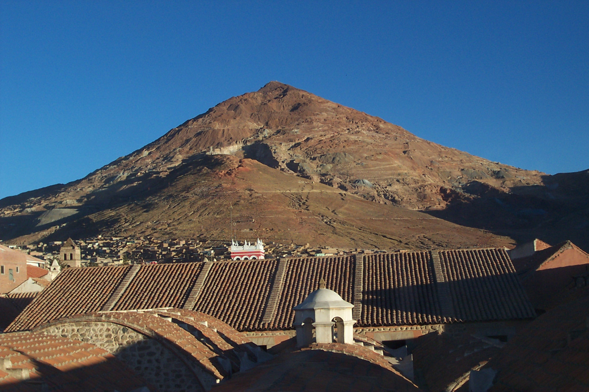
Source
Mhwater at Dutch Wikipedia, Cerro ricco, Wikimedia Commons. Licence : Domaine public.L'argent commence à être exploité à Potosí douze ans seulement après la conquête espagnole de l'Empire inca. À partir de 1545, ce sont plus de 30 000 tonnes d'argent qui sont extraites du Cerro Rico et directement envoyées vers l'Europe. Le minerai est extrait par le travail forcé des Autochtones et des esclaves en provenance de l'Afrique. La ville devient rapidement la plus peuplée d'Amérique derrière Mexico, avec près de 200 000 habitants : à l'époque, elle dépasse Londres, Paris, Rome ou Séville.
Des milliers de travailleurs meurent des suites de problèmes respiratoires causés par la poussière dans les mines, bloqués après des éboulements ou en raison des mauvais traitements. On dit que la quantité d'argent extraite des mines de Potosí aurait suffi à construire un pont au-dessus de l'Atlantique pour relier Potosí à l'Espagne, mais que les ossements des mineurs morts dans des accidents y auraient suffi également.
La mise en place du commerce triangulaire
Avant de recourir aux esclaves africains, les colons espagnols forcent les habitants autochtones à travailler dans les mines et sur les plantations agricoles. Les pratiques agricoles visent d'abord et avant tout la rentabilité économique. Les colons développent donc de plus en plus de grandes plantations de canne à sucre et ont rapidement besoin de main-d'oeuvre en très grande quantité. Toutefois, les Autochtones recrutés meurent rapidement, soit parce qu'ils ont contracté une maladie mortelle, soit parce qu'ils ont succombé aux lourdes tâches physiques qu'ils devaient accomplir.
Le commerce triangulaire se développe alors entre les colonies européennes en Amérique, les métropoles européennes et l'Afrique. Les métropoles européennes exploitent, dans les colonies, plusieurs ressources naturelles de grande valeur : sucre, tabac, rhum, café, minéraux. L'Europe envoie des armes, des tissus et de l'alcool en Afrique en échange d'esclaves. Ces derniers sont alors expédiés dans les colonies afin d'y exploiter la canne à sucre, les métaux ainsi que le tabac.
Il faut comprendre, dans ce commerce triangulaire, qu'il n'y a que la métropole européenne qui tire des profits. Elle cherche à augmenter sa puissance et son prestige face aux autres royaumes européens : c'est ce qu'on appelle le mercantilisme.
(Source : Alloprof)
La traite des esclaves
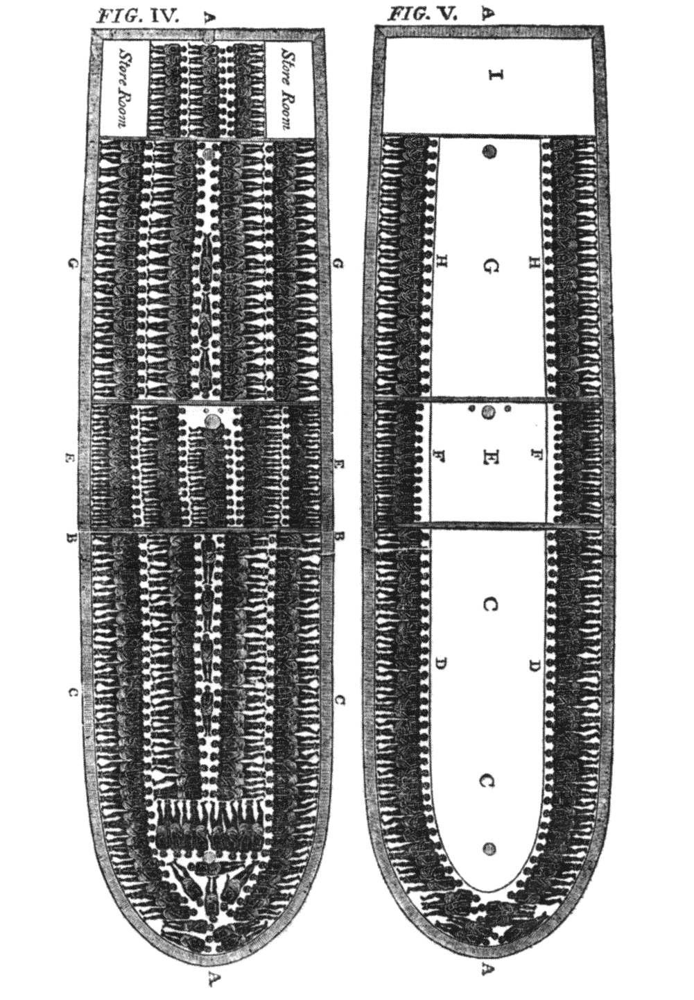
Source
Unknown author Unknown author, Slave ship diagram, Wikimedia Commons. Licence : Domaine public.Les navires marchands qui servaient au transport d'esclaves s'appellent négriers. Ces navires étaient conçus pour transporter aussi bien les marchandises que les groupes d'esclaves. Les navires en provenance de l'Europe effectuaient un premier arrêt sur les côtes africaines. C'est là que les marchands échangeaient des biens contre des personnes réduites en esclavage. Environ 600 d'entre elles étaient d'abord marquées au fer rouge, puis enchaînées dans les cales des navires. Elles y étaient entassées, sans lit, sans eau, sans toilette et sans réelle possibilité de mouvement. La traversée de l'Atlantique pouvait durer entre 3 et 6 semaines, pendant lesquelles tant les esclaves que les membres de l'équipage succombaient aux conditions de vie éprouvantes. Le taux de mortalité chez les esclaves était d'environ 10 % à 20 %.
Les maîtres ne les ont jamais réellement traités avec pitié ou compassion. Ces sentiments étaient jugés inutiles puisque les esclaves n'étaient tout simplement pas considérés comme des humains. Pour les propriétaires des plantations, ils n'étaient qu'une marchandise parmi d'autres. Dès leur sélection à bord du navire, les familles pouvaient être séparées en tout temps. Les esclaves habitaient sur les terres de leurs maîtres et vivaient dans de petites maisons sans meuble dans lesquelles le sol servait de lit.
(Source : Alloprof)
Les peuples autochtones
Lorsque les Européens arrivent sur le continent américain pour la première fois, ils croient être arrivés en Inde par une nouvelle route. C'est pourquoi, quand ils entrent en contact avec les habitants du nouveau continent, ils les appellent Indiens. Plus tard, lorsqu'ils réalisent qu'ils ont débarqué en Amérique et non en Inde, ils changent le terme pour Amérindiens.
Avant l'arrivée des Européens, il existait déjà des civilisations bien implantées sur le territoire de l'Amérique. On assiste donc à un véritable choc culturel. Alors qu'au nord de l'Amérique, près du Canada actuel, ce sont les Iroquoiens et les Algonquiens qui habitent le territoire, plus au sud, dans l'Amérique centrale et l'Amérique du Sud actuelles, les Aztèques et les Incas se partagent la région.
(Source : Alloprof)
Hernán Cortés et l'Empire aztèque
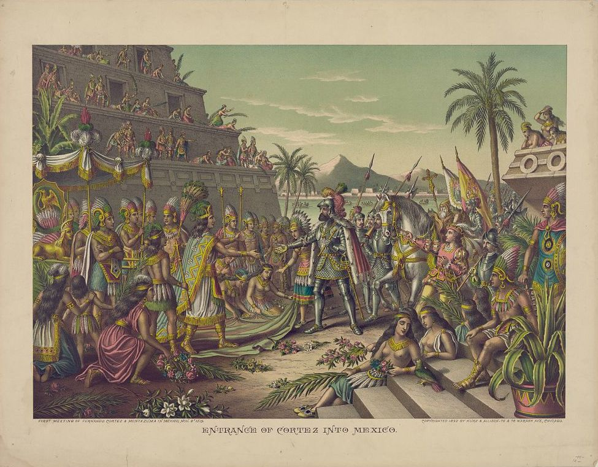
Source
Kurz & Allison, Cortes y moctezuma, Wikimedia Commons. Licence : Domaine public.Après les voyages de Christophe Colomb, c'est au tour des conquistadors espagnols et des explorateurs portugais de partir vers les Amériques afin de trouver l'or, l'argent et de nouvelles ressources naturelles, à défaut d'épices. L'obsession pour l'or, amplifiée par le mythe de l'Eldorado, entraîne les conquérants espagnols très loin en Mésoamérique et en Amérique du Sud, où ils entrent en contact, mais aussi en confrontation, avec les civilisations déjà établies.
Cortés souhaite mettre la main sur les richesses du puissant Empire aztèque qui domine les régions qu'il visite. Il sollicite une rencontre avec l'empereur Moctezuma II, qui choisit de le faire patienter plus de huit mois avant de le recevoir. Pendant ce temps, il rencontre ses ambassadeurs, qui lui apportent des objets en or. Cortés les impressionne avec ses chevaux et ses armes à feu, mais sa trop grande assurance ne plaît pas aux diplomates. En attendant son entretien avec l'empereur, il s'allie avec des peuples qui souhaitent se libérer de l'emprise des Aztèques et réussit à conquérir Cholula, la deuxième ville de l'empire, ce qui incite Moctezuma II à consentir à une rencontre le 8 novembre 1519 dans la capitale Tenochtitlan.
Des affrontements entre les Espagnols et les Aztèques entraînent la mort de l'empereur Moctezuma II. Les combats forcent les Espagnols à quitter temporairement Tenochtitlan en 1520, mais ils reviennent l'année suivante avec leurs alliés pour envahir la ville. Hernán Cortés s'empare de la capitale, qu'il renomme Mexico. Il met la main sur les réserves aztèques de métaux précieux. La famine et les épidémies ont raison de la résistance des Aztèques, dont la population est ravagée.
(Source du texte : Evelyne Ferron et Karine Prémont, Le monde depuis le XVe siècle. Une histoire des sociétés en interaction, Fides Éducation, 2024, pages 178-179)
Les conséquences sur les peuples autochtones
Dès leur arrivée sur le territoire américain, les Européens considèrent les habitants comme un peuple inférieur. Ils imposent leur culture, leur mode de vie et leurs croyances aux Autochtones. Ceux qui étaient autrefois nomades sont obligés de se sédentariser. Les Autochtones sont aussi, malheureusement, réduits en esclavage ou exterminés dans de véritables massacres. D'autres fois, ce sont les maladies, contre lesquelles ils n'ont pas développé d'anticorps, qui font des ravages.
Les conséquences des grandes explorations européennes sur les peuples autochtones sont très négatives. Les Européens de l'époque utilisent le territoire américain et sa population comme s'ils les possédaient et ne tiennent pas compte des intérêts des populations déjà en place. Ces populations subissent d'autres conséquences négatives : la perte de leurs territoires, de leur autonomie politique, de leurs richesses naturelles et de leur identité culturelle. En effet, les Européens les obligeaient à parler leur langue et à se convertir à la religion catholique. Elles ont donc subi l'acculturation.
Tenochtitlan elle-même ne survit pas à la conquête. Les Espagnols démolissent ses temples et réutilisent leurs pierres pour bâtir Mexico sur ses ruines. Au fil des siècles, le lac est presque entièrement asséché et les canaux deviennent des rues. Compare la ville de 1518, telle que l'imagine Thomas Kole à partir des sources historiques et archéologiques, et la ville d'aujourd'hui, photographiée par drone sous le même angle.
Tenochtitlan en 1518, Mexico aujourd'hui
Choisis un point de vue, puis fais glisser le curseur
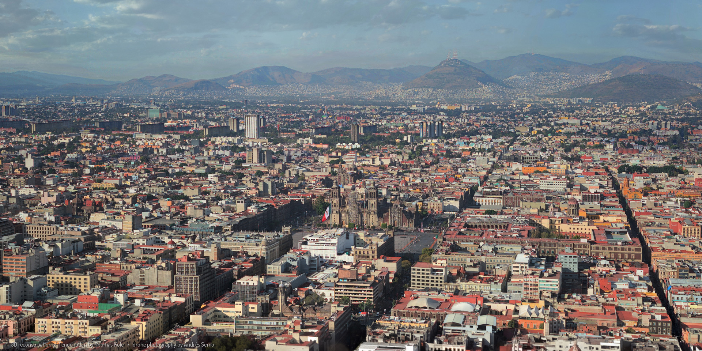
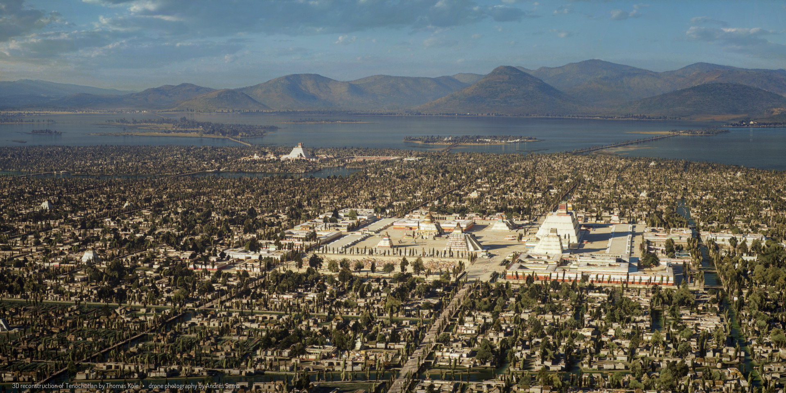
Images à récupérer python outils\images.py
La vue vers le nord
Source
Thomas Kole, Retrato de Tenochtitlan. Licence : Creative Commons BY 4.0.Source
Andrés Semo García (SemoDron), Retrato de Tenochtitlan. Licence : Creative Commons BY 4.0.Des activités pour t'exercer
Sources
- Service national du RÉCIT en univers social
- Alloprof, L'expansion européenne dans le monde
- Futura sciences, Le traité de Tordesillas
- Wikipédia
- Michel Jébrak, Des mines et des empires, Éditions Multimondes, 2024
- Evelyne Ferron et Karine Prémont, Le monde depuis le XVe siècle, Fides Éducation, 2024